flips_10
heads tails
0.6 0.4 CRJU 705 · Session 4 · Fall 2026
Topic: probabilities in the long run and sampling distributions — taught by simulation. We won’t derive anything today; we’ll draw thousands of samples in R and watch the theory appear on screen.
Learning goals: explain in your own words — law of large numbers, sampling distribution, standard error, central limit theorem — and say why R’s var() and sd() divide by n − 1 (Session 2’s IOU gets paid today).
R4DS thread: you read Ch. 5 (Data tidying) & Ch. 6 (Workflow: scripts and projects) — today’s lab puts both to work.
If I told you the chance of being selected for a jury was 10%, and you weren’t selected after 10 tries, would that surprise you? Why or why not?
Two kinds of probability:
Today’s whole session is about the gap between these two — and how it shrinks.
Flip a fair coin 10 times:
flips_10
heads tails
0.6 0.4 lln <- tibble(
flip = 1:10000,
heads = sample(c(0, 1), size = 10000, replace = TRUE)
) |>
mutate(running_prop = cumsum(heads) / flip)
ggplot(lln, aes(flip, running_prop)) +
geom_line(color = crju_colors["navy"]) +
geom_hline(yintercept = 0.5, color = "red", linetype = "dashed") +
labs(title = "Proportion of heads in coin flips",
x = "Number of flips", y = "Proportion heads")Concept: in the long run, empirical ≈ theoretical. But “long run” might be longer than we think — look how wild the first few hundred flips are.
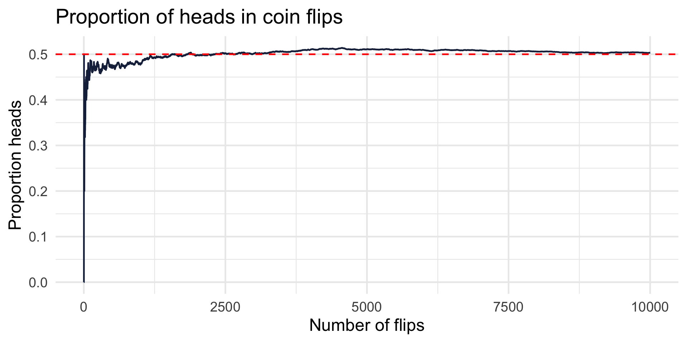
False positive drug tests. Suppose a field test for drugs has a 5% false positive rate. Simulate 100 field tests of non-users:
tests
correct false positive
91 9 Discussion: even with a low false positive rate, false positives occur regularly in practice. What do we think about this? Does it matter?
Stop & frisk outcomes. Suppose 8% of stops yield contraband. What happens over 1,000 stops?
stop_outcomes
found nothing
69 931 Discussion: is that hit rate too low? What if each find were an illegal gun that would have been used in a violent crime? Simulation makes the long-run consequences of a policy concrete.
Two runs of 100 dice rolls — same die, same code:
dice <- tibble(
run = rep(c("Run 1", "Run 2"), each = 100),
roll = c(sample(1:6, size = 100, replace = TRUE),
sample(1:6, size = 100, replace = TRUE))
)
ggplot(dice, aes(x = factor(roll))) +
geom_bar(fill = crju_colors["garnet"]) +
facet_wrap(~run) +
labs(title = "Dice roll frequencies — two runs of 100",
x = "Face", y = "Count")Does either look fair? Both are. Random does not mean balanced in small samples — remember this every time you see a “streak” in real data.
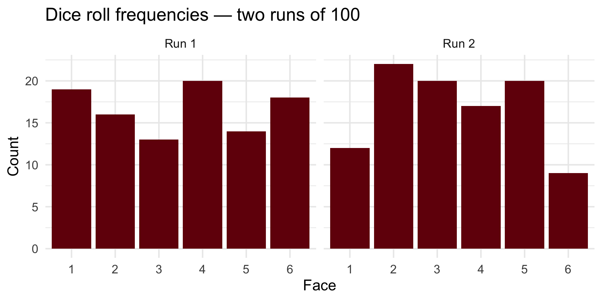
population-data.csv — 10,000 test scores. In real research we never see the whole population; today we get to cheat:
# A tibble: 1 × 4
mean median sd n
<dbl> <dbl> <dbl> <int>
1 100. 100. 15.0 10000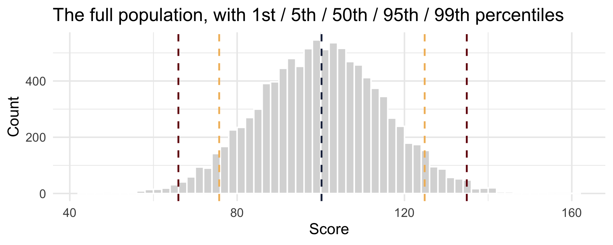
Close to the truth (mean ≈ 100, SD ≈ 15) — but not exact. That gap is sampling error, and it is not a mistake; it’s a fact of life.
The question that drives the rest of the semester: how wrong can one sample be?
Draw 10 scores from the bottom 5% of the population — and look at them in context:
[1] 70.02723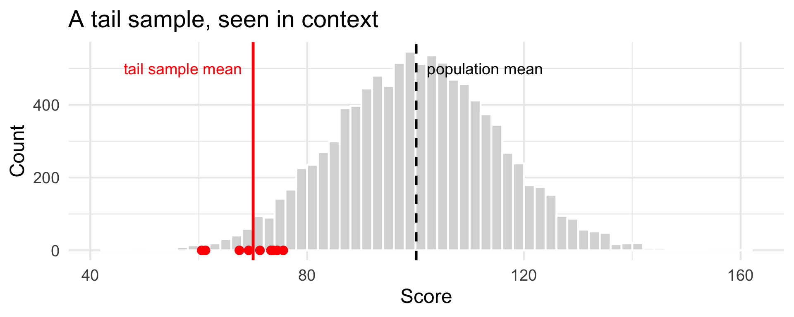
Now pretend that sample is all we ever get to see:
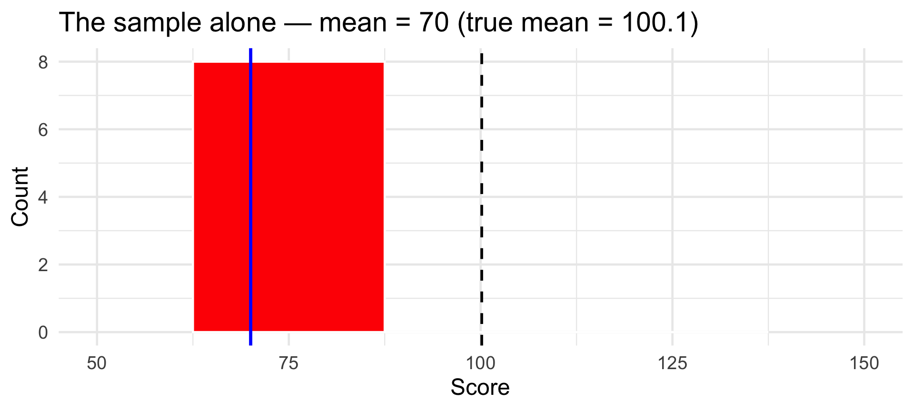
If this were your dataset, you’d report a “typical” score near 70 — and you’d be badly wrong. How often does that actually happen with a random sample? Let’s find out.
The key move of this whole session — instead of drawing one sample, draw 1,000 samples of 30 and keep each sample’s mean:
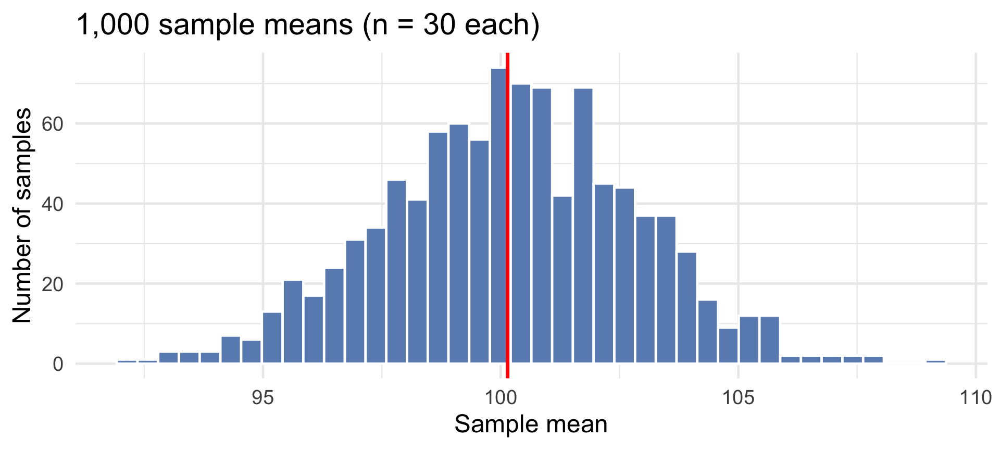
This histogram of means is a sampling distribution. It’s centered on the true population mean — and it’s much narrower than the population itself.
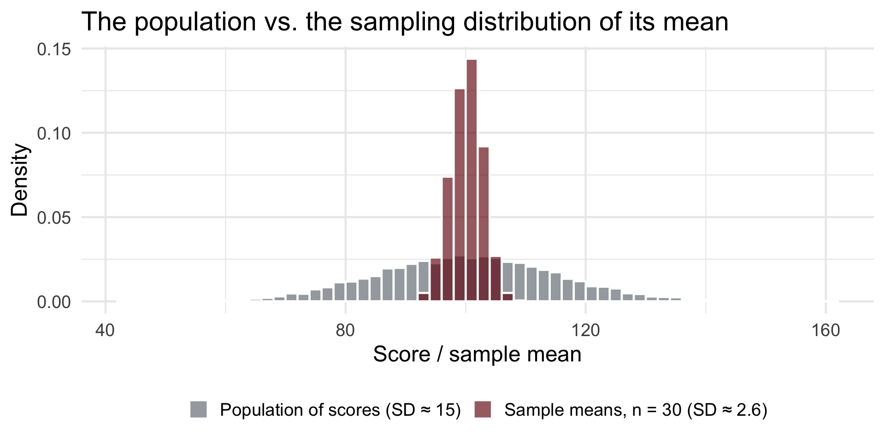
Same center. Radically different spread. Individual scores wander all over; averages of 30 stay close to home.
The SD of the sampling distribution has its own name: the standard error. And it has a formula — which our simulation can check:
[1] 2.648695[1] 2.733584The standard error answers: “if I re-ran my study, how much would my estimate typically move?”
That single number is the foundation of confidence intervals and hypothesis tests — the rest of this course.
many_ns <- expand_grid(n = c(5, 30, 100), draw = 1:1000) |>
mutate(mean_score = map_dbl(n, \(k) mean(sample(pop$score, size = k))))
ggplot(many_ns, aes(mean_score)) +
geom_histogram(bins = 40, fill = crju_colors["navy"], color = "white") +
geom_vline(xintercept = mean(pop$score), color = "red", linetype = "dashed") +
facet_wrap(~n, labeller = label_both) +
labs(x = "Sample mean", y = "Count")# A tibble: 3 × 3
n simulated_se formula_se
<dbl> <dbl> <dbl>
1 5 6.84 6.70
2 30 2.77 2.73
3 100 1.49 1.50The SE shrinks like 1/√n: to halve your uncertainty you need four times the data.
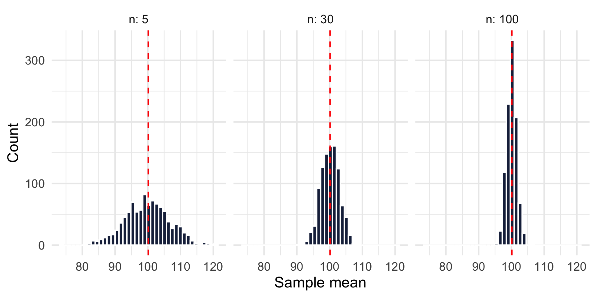
Back to our 30,000 real Chicago incidents. Whether an incident ended in arrest is as far from a bell curve as data gets — every value is TRUE or FALSE:
# A tibble: 2 × 3
arrest n prop
<lgl> <int> <dbl>
1 FALSE 25176 0.839
2 TRUE 4824 0.161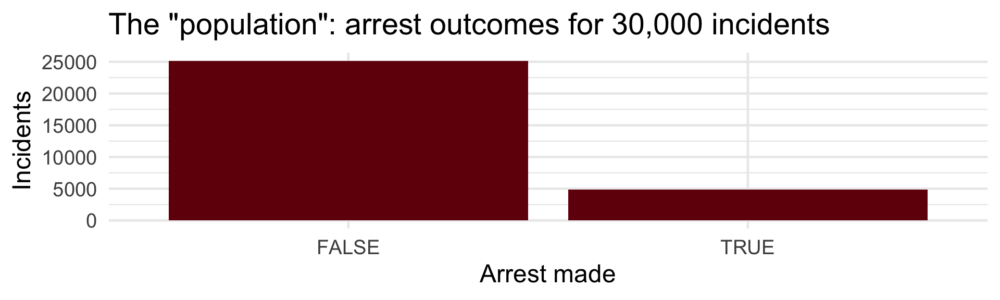
Treat these 30,000 incidents as the population. True arrest proportion: 0.161.
Imagine an analyst who can only pull 100 case files at a time:
ggplot(arrest_props, aes(prop_arrest)) +
geom_histogram(binwidth = 0.01, fill = crju_colors["blue"], color = "white") +
geom_vline(xintercept = mean(crimes$arrest), color = "red", linewidth = 1.2) +
labs(title = "1,000 sample arrest proportions (n = 100 incidents each)",
x = "Proportion of sampled incidents with an arrest", y = "Samples")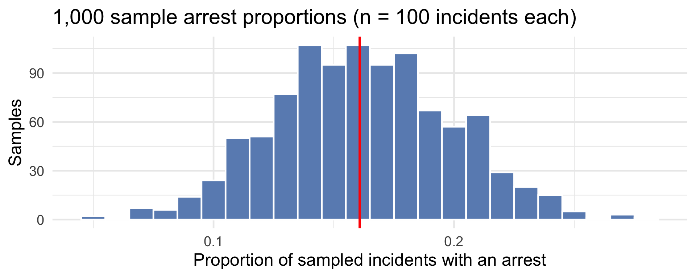
That’s the central limit theorem:
Whatever shape the population has — even a two-bar TRUE/FALSE stack — the sampling distribution of a mean (or proportion) becomes approximately normal as n grows, centered on the true value.
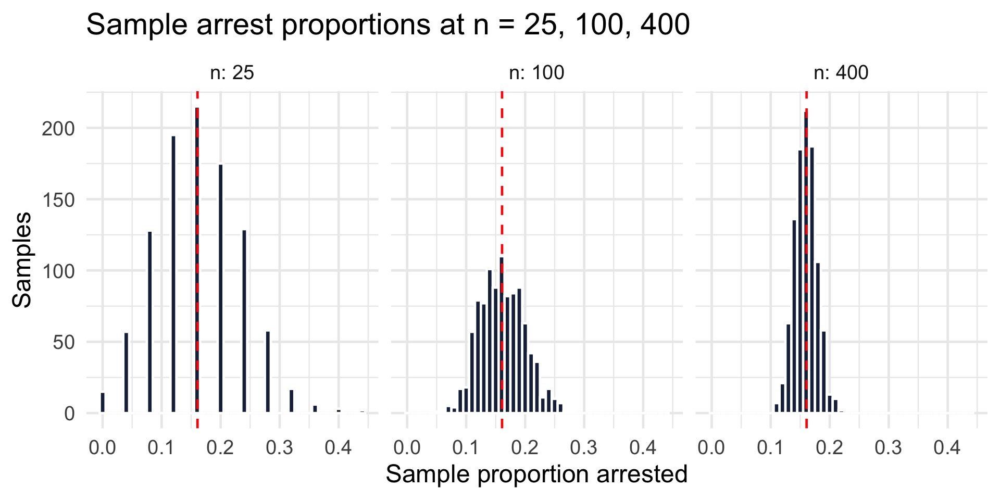
At n = 25 a sample could easily tell you the arrest rate is 8% or 28%. At n = 400 you’re rarely off by more than a couple of points.
In Session 2 we noticed var() and sd() divide by n − 1, not n, and I promised you’d see why. Simulation pays the debt. Draw 5,000 tiny samples (n = 5) and compute the variance both ways:
In real life you never get the left-hand panel. One draw from a mystery population:
[1] 95.44168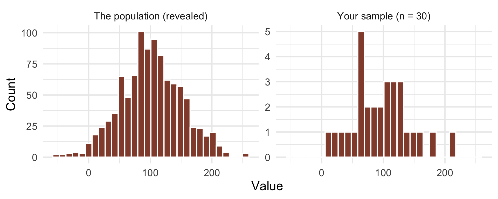
Based on 30 points, you might assume normality — or skew, or outliers — and be wrong. Sampling-distribution logic is what lets us say how wrong we’re likely to be.
Work in pairs; record your code and results in a script.
sample(), count()). Then just 10 rolls. Then repeat the 10-roll version five times. How much do small samples vary?rnorm(10000, mean = 100, sd = 15), plot it, and mark the 1st/5th/95th percentiles with quantile(). Draw a sample of 30 — where does its mean fall?unknown_pop <- rnorm(1000, 100, 50) without plotting it. Sample 30 values, plot the sample, and write down what you’d conclude about the population. Then peek. Were you right?pivot_longer() and pivot_wider() with city crime trends and reentry outcomes (lab page)CRJU 705 · Session 4